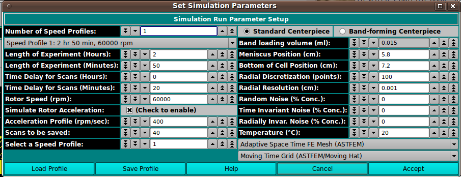

UltraScan Simulation Parameters:
An option in UltraScan III US_Astfem_Sim, this dialog
allows specifying parameters governing a simulation.
The dialog allows multiple speed profiles in the course of the
simulation. Items along the left side of the dialog refer to the currently
selected speed step. Those on the right are for the general properties of
the simulation, including radial ranges and simulation method.
Main Window:

Dialog Items:
-
Number of Speed Profiles: Specify the total number of
speed profiles to define.
-
(Speed Profile...) Select the speed profile for which
parameters to be specified below apply.
-
Length of Experiment (Hours): Current speed step duration
in hours.
-
Length of Experiment (Minutes): Current speed step duration
in residual minutes (beyond duration given in hours).
-
Time Delay for Scans (Hours): Current speed step time delay
in hours.
-
Time Delay for Scans (Minutes): Current speed step time delay
in residual minutes (beyond delay given in hours).
-
Rotor Speed (rpm): Current speed step rotor speed in
revolutions per minute.
-
Simulate Rotor Acceleration: Check the box to the right to
enable simulation of gradual acceleration of the rotor initially
or between steps with differing rotor speeds.
-
Acceleration Profile (rpm/sec): If rotor acceleration is to
be simulated, the value here gives the acceleration as a change in
revolutions per minute for each second.
-
Scans to be saved: The number of scans to be simulated and
saved for this speed step.
-
Select a Speed Profile Selecting a number here is an alternate
way (to the "Speed Profile..." drop-down) to specify the speed step
for which parameters above apply.
-
Standard Centerpiece Check to specify a standard,
non-band-forming centerpiece.
-
Band-forming Centerpiece Check to specify a band-forming
centerpiece.
-
Band-loading volume (ml): Specify any band-loading volume
in milliliters.
-
Meniscus Position (cm): Specify the radial position of
the meniscus.
-
Bottom of Cell Position (cm): Specify the radial position of
the simulation data bottom.
-
Radial Discretization (points): Specify the number points for
which concentrations are calculated over the radial range.
-
Radial Resolution (cm): Specify the resolution of the radial
range, the increment in centimeters between radius points.
-
Random Noise (% Conc.): Specify the percent concentration of
random noise to calculate and add to the simulation.
-
Time Invariant Noise (% Conc.): Specify the percent
concentration of time-invariant noise to calculate and add to the
simulation.
-
Radially Invar. Noise (% Conc.): Specify the percent
concentration of radially-invariant noise to calculate and add to
the simulation.
-
Temperature (°C): Specify the temperature in degrees
centigrade to assign to scans.
-
(mesh type): Select the mesh or method type to use in the
simulation: ASTFEM, CLAVERIE, MOVING-HAT, USER, ASTFVM.
-
(grid type): Select the grid type to use in the
simulation: MOVING, FIXED.
-
Load Profile Open a dialog to load a previously saved
simulation parameters profile in "sp-*.xml" name form.
-
Save Profile Open a dialog to save the current simulation
parameters to a profile file in "sp-*.xml" name form.
-
Help Display this documentation.
-
Cancel Exit this dialog without returning parameter values
to the caller.
-
Accept Exit this dialog and return parameter values
to the caller.
 Manual
Manual